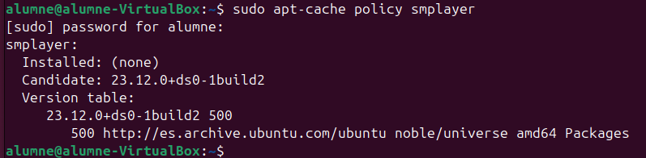
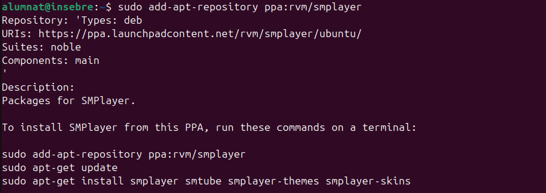
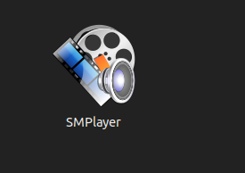

Fixació de Paquets amb APT a Ubuntu
Introducció a la Fixació de Paquets amb APT
La fixació de paquets (o APT pinning) és una funcionalitat d'APT, el sistema de gestió de paquets en distribucions basades en Debian com Ubuntu, que permet definir quina versió d'un paquet específic s'ha d'instal·lar, independentment de les actualitzacions disponibles en altres repositoris o versions del sistema operatiu. Aquesta tècnica és útil quan volem assegurar-nos que un programa específic utilitzi una versió concreta.
Quan és útil la fixació de paquets? - Versions d’aplicacions estables: Quan es necessita una versió específica d'una aplicació que només es troba en una altra versió o repositori, com versions de proves o versions inestables.
Comprovar la Política de Paquets amb apt-cache policy
L'eina apt-cache policy permet veure la política de versions d'un paquet específic, incloent-hi la versió instal·lada, la versió disponible per instal·lar i el repositori d'on prové el paquet.
Exemple: Comprovació de la versió de smplayer
En aquest exemple, s'ha utilitzat la comanda apt-cache policy smplayer per consultar les versions disponibles del paquet smplayer:
sudo apt-cache policy smplayer

L'output ens mostra:
- Installed:
(none)— No hi ha cap versió instal·lada desmplayeractualment. - Candidate:
23.12.0+ds0-1build2— Aquesta és la versió que es proposa instal·lar si executemsudo apt install smplayer. - Version table: La versió
23.12.0+ds0-1build2prové del repositorihttp://es.archive.ubuntu.com/ubuntu, en el componentnoble/universeper arquitecturaamd64, amb una prioritat de500.
Ús en la Fixació de Paquets
La comanda apt-cache policy és útil en la configuració de fixació de paquets, ja que permet veure d’on prové cada versió i la seva prioritat actual. Això facilita l’elecció d'una versió específica del paquet en les configuracions de fixació.
Com configurar la fixació de paquets
Per configurar la fixació, primer hem d'editar o crear un arxiu dins de /etc/apt/preferences.d/ que defineixi les regles de prioritat. Aquesta configuració pot controlar la versió i repositori preferit per un o més paquets.
Exemple de configuració
A continuació, es mostra un exemple de fixació per instal·lar un paquet anomenat smplayer amb una prioritat específica. Això assegura que es triï una versió específica o que provingui d’un repositori concret.
Package: smplayer
Pin: Version 24*
Pin-Priority: 400
Package: smplayer
Pin: Version 23*
Pin-Priority: 500
Afegir un PPA per a SMPlayer
Per instal·lar paquets addicionals que no estan inclosos en els repositoris oficials d’Ubuntu, es poden utilitzar els PPAs (Personal Package Archives). Aquests repositoris són gestionats per desenvolupadors externs i proporcionen versions actualitzades o alternatives de certs programes.
En aquest cas, s'ha afegit el PPA ppa:rvm/smplayer, que conté paquets per a SMPlayer. Per completar la instal·lació, primer s’ha d'actualitzar la llista de paquets disponibles amb els paquets nous d'aquest PPA, i després instal·lar SMPlayer i altres paquets opcionals relacionats, com ara smtube, smplayer-themes, i smplayer-skins.
sudo add-apt-repository ppa:rvm/smplayer

Què fa cada pas?
- Afegir el PPA: Afegeix un nou repositori al sistema que conté les versions específiques del programari, en aquest cas, SMPlayer.
- Actualitzar la llista de paquets: Permet que el sistema reconegui els nous paquets disponibles des del PPA afegit.
- Instal·lar SMPlayer i paquets relacionats: Després d’actualitzar, es pot instal·lar SMPlayer i, opcionalment, altres paquets com temes i skins relacionats.
Avantatges de fer servir un PPA
Els PPAs són útils per obtenir versions més recents o paquets especialitzats que poden no estar disponibles en els repositoris oficials d'Ubuntu. Tanmateix, és important tenir en compte que els PPAs no estan oficialment suportats per Ubuntu, i per tant poden comportar certs riscos de compatibilitat o estabilitat.
Instal·lació de SMPlayer
Per assegurar-nos que la instal·lació de SMPlayer es realitza amb la prioritat configurada, primer hem d'actualitzar la llista de paquets per garantir que el sistema reconeix els canvis als repositoris.
Actualitza la llista de paquets disponibles executant:
sudo apt update
Un cop actualitzada la llista, instal·la SMPlayer amb la següent comanda:
sudo apt install smplayer
Aquest procés garanteix que la versió de SMPlayer s’instal·li d’acord amb les preferències configurades, incloent-hi qualsevol prioritat que hàgim definit en la configuració de fixació de paquets.
